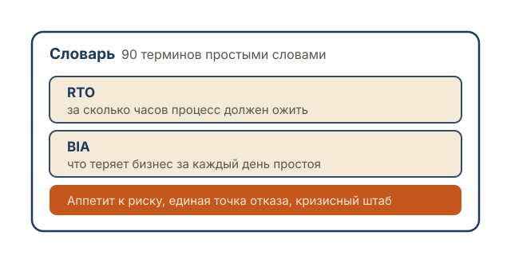
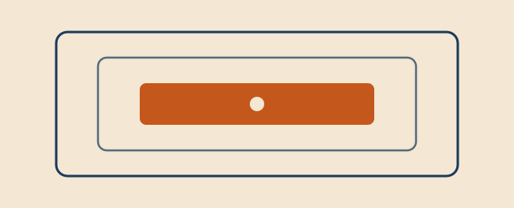
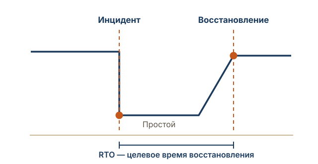
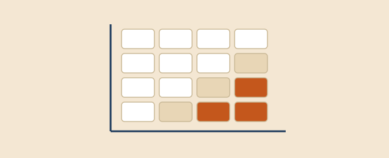
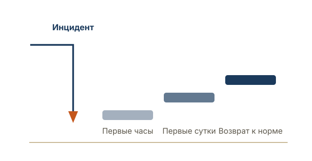
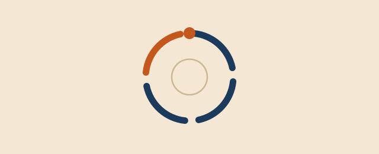
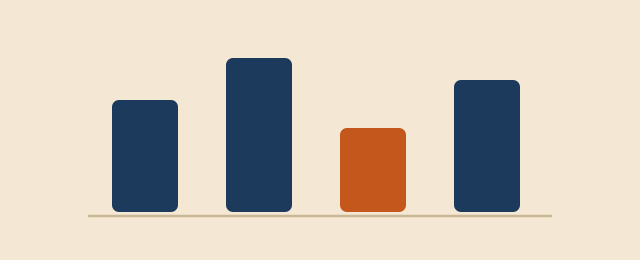
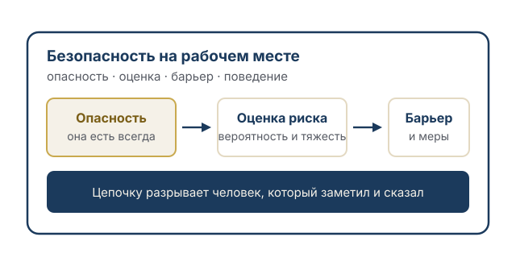

Словарь на 90 терминов и 48 материалов в семи разделах — от значения слова до отраслевой практики. Выберите раздел или найдите нужное поиском.
Девяносто терминов непрерывности и рисков простыми словами: что означает, зачем нужно и как звучит по-английски. С этого раздела удобно начинать, если вы впервые столкнулись с темой.

Что такое непрерывность бизнеса, чем она отличается от ИТ и информационной безопасности, кто за нее отвечает и с чего начинают.

Какие процессы критичны, сколько стоит день простоя, за какое время надо восстановиться и что готовят заранее.

Как собрать работающую систему управления рисками, оценить риск в деньгах и подготовиться к потере поставщика или человека.

Что делать в первые часы инцидента, как готовиться к атаке шифровальщика и что говорить сотрудникам, клиентам и СМИ.

Требования ИСО 22301 и Банка России, учения и тестирование, обучение команды и порядок внедрения.

Профиль рисков в ИТ, нефтегазе, металлургии и строительстве — что именно останавливает бизнес в каждой отрасли.

69 понятий простыми словами, с английскими оригиналами — RTO, RPO, анализ воздействия, риск-аппетит, эскалация.
Открыть словарь →13 вопросов, 5 минут, бесплатно — результат сразу на экране и на почту.
Пройти диагностику →Оценка профессиональных рисков, опасности вокруг человека, барьеры защиты и поведение на смене. Самый массовый пласт запросов по слову «риск» в России и самая недооцененная часть устойчивости компании.
